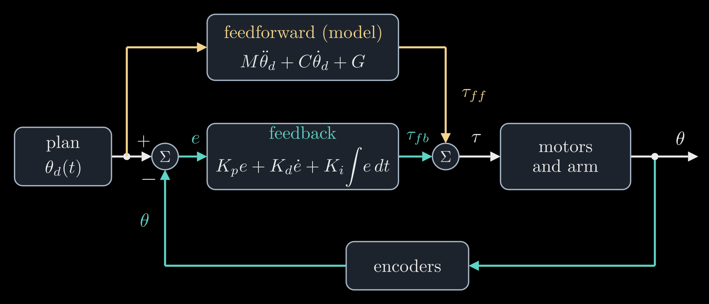
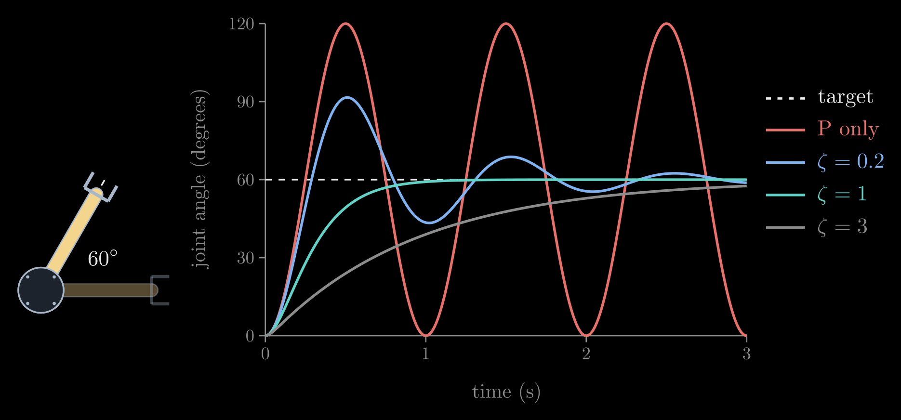
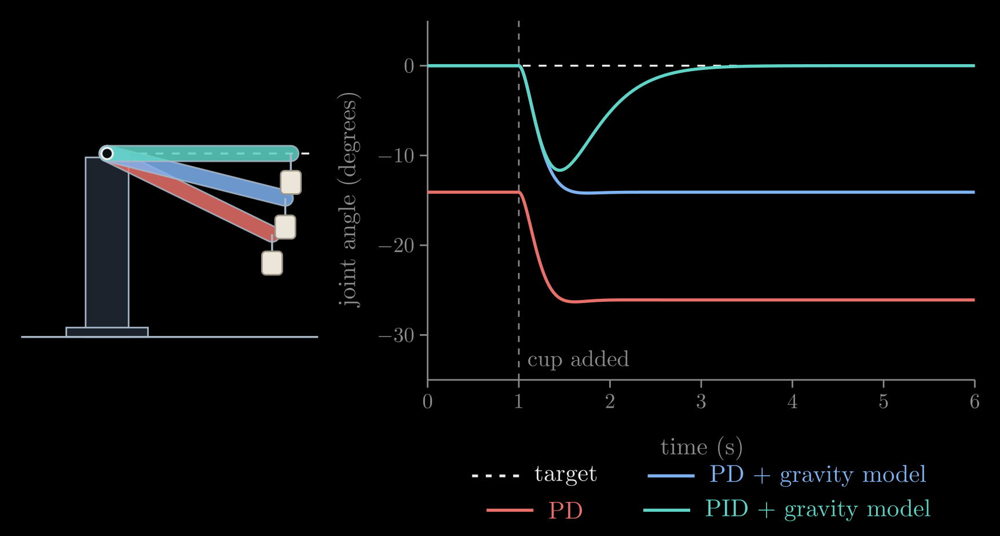
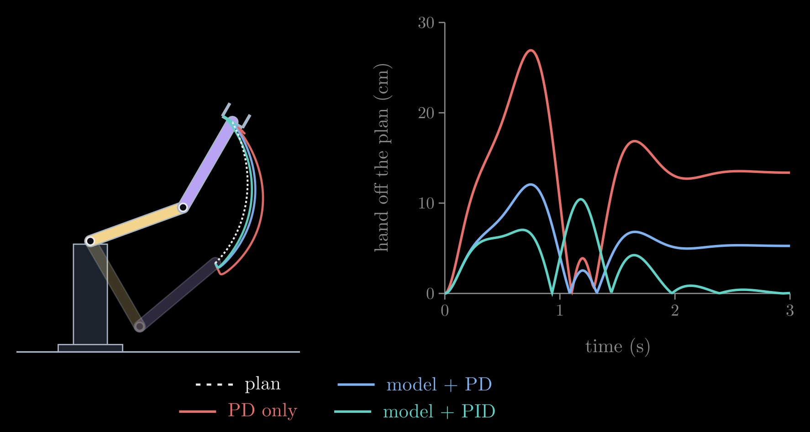

Feedback Control for Robot Arms
A model of an arm's dynamics turns a planned motion into motor torques, but no model is exact. The arm picks up a cup whose weight nobody entered, its gears have friction, its link masses are off by a few percent, and people bump into it. Torques worked out in advance then produce a slightly different motion, and nothing in them notices. Feedback control closes the loop: sensors measure what the joints actually do, and the controller corrects the torque from the difference between the plan and the measurement, many times a second. The workhorse is the PID controller, which at every joint applies
\[\tau = K_p\, e + K_d\, \dot e + K_i \int_0^t e\, dt, \qquad e = \theta_d - \theta\]
Here \(\theta_d(t)\) is the angle the plan wants for the joint at time \(t\), \(\theta\) the measured angle, and \(e\) the tracking error, their difference. \(\dot e\) is the error's rate of change and \(\int_0^t e\, dt\) its running sum since the start. The three gains \(K_p\), \(K_d\) and \(K_i\) are positive numbers that the engineer chooses: the proportional term pushes against the error like a spring, the derivative term brakes like a damper, and the integral term keeps pushing for as long as any error remains. \(\tau\) is the motor's torque, as in Robot Arm Dynamics. This note builds the controller up one term at a time on a single joint, then combines it with the arm's model for the two-link arm.
This is the sixth of six notes on robot arms, after 3D Rotations: Matrices, Euler Angles and Quaternions, Forward Kinematics, Inverse Kinematics, The Manipulator Jacobian and Robot Arm Dynamics.
Video: Build a Robot Arm from Scratch (5): How to Keep It on Track, a five-minute visual explainer of this note, from a full cup that pulls the arm below its planned path, through the spring, damper and running sum of a PID controller, to why feedback stays on when the model learns the cup's weight.
The feedback loop
Figure 1 shows the loop. A planner, using inverse kinematics and the Jacobian, supplies the joint angles \(\theta_d(t)\) the arm should follow. Encoders on the motors measure the actual angles \(\theta\) to a small fraction of a degree. The controller subtracts the two and turns the error into a feedback torque \(\tau_{fb}\); the motor drives apply it, the arm moves, and the encoders measure again, typically a thousand times a second. Above the loop, the arm's model turns the plan into the torques it should take, the feedforward torque \(\tau_{ff}\), before the motion happens. The motors receive the sum, \(\tau = \tau_{ff} + \tau_{fb}\): the model does most of the work, and feedback corrects what the model gets wrong. Feedforward alone is open-loop control, blind to every error; feedback alone works, but it has to wait for an error to appear before it acts.

Figure 1. The control loop of one joint, or of all the joints at once when the angles and torques are vectors. The feedforward path (gold) computes torques from the plan with the arm's model; the feedback path (teal) measures the joint angles, compares them with the plan and corrects. Their sum goes to the motors.
Proportional: a spring
Start with one motor turning one link of mass \(m\) and length \(L\) that lies flat on a table, so that gravity plays no part. Its dynamics is the one-link case of Robot Arm Dynamics, \(M \ddot\theta = \tau\), where \(\ddot\theta\) is the angular acceleration and \(M = m L^2 / 3\) the link's inertia about the joint. The simplest feedback is a torque proportional to the error, \(\tau = K_p\, e\). For a fixed target \(\theta_d\) the error's acceleration is \(\ddot e = -\ddot\theta\), so the loop obeys
\[M \ddot e + K_p\, e = 0\]
the equation of a mass on a spring, with \(K_p\) as the spring's stiffness, in newton meters per radian. The error does not die out: it oscillates forever at the natural frequency \(\omega_n = \sqrt{K_p / M}\), in radians per second. Told to turn by 60°, the link overshoots to 120°, swings back to 0° and keeps going (Figure 2, red). Nothing in \(K_p\, e\) knows how fast the link is already moving, so the push toward the target is still on when the link arrives at full speed. Friction in a real joint would slowly calm the swing, but a controller should not rely on it.
Derivative: a damper
The derivative term adds a torque against the error's rate of change. With the target fixed, \(\dot e = -\dot\theta\), so \(K_d\, \dot e\) brakes the joint in proportion to its speed, like a shock absorber, and the loop becomes a mass on a spring and a damper:
\[M \ddot e + K_d\, \dot e + K_p\, e = 0\]
How it settles depends on one number, the damping ratio
\[\zeta = \frac{K_d}{2 \sqrt{K_p M}}\]
Below 1 the error still oscillates, but each swing is smaller than the last. At \(\zeta = 1\), critical damping, it returns to zero as fast as it can without overshooting. Above 1 it creeps back slowly (Figure 2). Most joint controllers aim near \(\zeta = 1\). The two formulas also turn the choice of gains around: decide how fast the joint should respond, \(\omega_n\), and how damped, \(\zeta\), and set
\[K_p = M \omega_n^2, \qquad K_d = 2 \zeta \omega_n M\]
A critically damped loop gets within 2 percent of its target in about \(6 / \omega_n\) seconds, under a second for \(\omega_n = 2\pi\) rad/s (one oscillation per second).

Figure 2. A link lying flat (seen from above, left) is told at time zero to turn from 0° to 60°. All four controllers have the same stiffness, \(\omega_n = 2\pi\) rad/s: proportional only, which swings between 0° and 120° forever, and PD with damping ratios 0.2, 1 and 3. Simulated for a uniform link with \(m = 1\) kg and \(L = 1\) m.
Higher gains make a stiffer, faster joint, but they cannot grow without limit. The derivative amplifies the noise in the measured speed, the loop runs in discrete ticks and reacts a little late, the gearbox and the links are slightly elastic, and the motor can deliver only so much torque. Push \(\omega_n\) toward any of these limits and the arm starts to buzz or shake, so the loop's speed is kept well below the sampling rate and the lowest natural frequency of the structure.
Gravity and the sag
Stand the link up in a vertical plane and the motor has to carry its weight as well. With \(\theta\) measured from the horizontal, the dynamics becomes \(M \ddot\theta + G(\theta) = \tau\), where \(G(\theta) = m g \tfrac{L}{2} \cos\theta\) is the weight \(m g\) times its lever arm, as in Robot Arm Dynamics, and \(g\) is the acceleration of gravity. A PD loop holding the link level pushes only when there is an error, so it cannot hold the weight on target: the link sags until the spring term balances gravity,
\[K_p\, e_{ss} = G(\theta)\]
where \(e_{ss}\) is the steady-state error, the error left once everything has stopped moving. Quadrupling \(K_p\) cuts the sag to a quarter but never removes it, and the gains cannot grow without limit. The direct fix uses the model: add the gravity torque the model predicts, \(\tau = K_p\, e + K_d\, \dot e + \hat G(\theta)\), where the hat marks a quantity computed from the model rather than measured. With an exact model the link holds level. But the model only knows the link. Hang a half-kilogram cup at its tip, a load nobody entered, and the sag returns, now set by the cup's weight alone (Figure 3, blue).
Integral: removing the steady error
The integral term \(K_i \int_0^t e\, dt\) grows for as long as any error remains, so a sagging joint pushes harder and harder until the sag is gone. The integral stops changing only when \(e = 0\), so the joint can come to rest only exactly on target, whatever constant torque is pulling it away: an unknown cup, steady friction, a gravity model that is slightly off. In Figure 3 the PID loop dips by about 12° when the cup is hung on, then lifts the link back to level within two seconds.

Figure 3. A link held level against gravity (\(m = 1\) kg, \(L = 1\) m); at \(t = 1\) s a 0.5 kg cup is hung at its tip. Plain PD (red) already sags 14° under the link's own weight and 26° with the cup. PD plus the model's gravity torque (blue) holds level until the cup arrives, then sags 14°, as much as plain PD did without it. PID plus the gravity model (teal) dips and returns to level. All three use the same \(K_p\) and \(K_d\). Left: the three final poses.
The integral has costs. It builds up slowly, so it removes steady errors rather than fast ones. It also adds lag to the loop, which brings back overshoot, and too large a \(K_i\) makes the joint oscillate or even go unstable. With the gravity model in place and a constant unmodeled torque \(d\), such as the cup's, the loop obeys \(M \ddot e + K_d\, \dot e + K_p\, e + K_i \int_0^t e\, dt = d\). Differentiating once removes both the integral and \(d\), leaving
\[M \dddot e + K_d\, \ddot e + K_p\, \dot e + K_i\, e = 0\]
where three dots mark the third derivative, and this is stable only if
\[K_i < \frac{K_p K_d}{M}\]
A heavier load raises \(M\) and lowers the limit, which is why a PID loop tuned for an empty gripper can start to oscillate when the gripper holds something heavy. A safe starting point puts all three roots of the loop's characteristic equation at one frequency \(\omega\), which gives \(K_p = 3 M \omega^2\), \(K_d = 3 M \omega\) and \(K_i = M \omega^3\), a ninth of the limit; Figure 3 uses \(\omega = 2\pi \cdot 0.7\) rad/s. The third cost is integral windup. When the motor is at its torque limit, or an obstacle blocks the arm, the error persists, the integral keeps growing, and once the arm is free the stored-up integral drives it far past the target. Controllers therefore stop integrating while the motor is saturated, or clamp the integral, which is called anti-windup.
Model plus feedback: the two-link arm
Everything so far carries over to an arm, one loop per joint: \(\theta\), \(\theta_d\) and \(e\) become vectors, and the gains become diagonal matrices, \(K_p = \mathrm{diag}(K_{p,1}, \dots, K_{p,n})\) for \(n\) joints, and likewise \(K_d\) and \(K_i\). Each joint's gains can be set from the formulas above with \(M\) replaced by that joint's diagonal entry of the mass matrix, \(M_{jj}\), the inertia its own motor feels. But the joints are not alone. Through the mass matrix's off-diagonal entries, the velocity torques and gravity, every joint's motion pushes on the others; separate loops see these couplings as disturbances, which grow with speed, and on fast motions they fall behind the plan.
The cure is to let the model carry the motion and leave only the errors to feedback, the two paths of Figure 1:
\[\tau = \underbrace{\hat M(\theta_d)\, \ddot\theta_d + \hat C(\theta_d, \dot\theta_d)\, \dot\theta_d + \hat G(\theta_d)}_{\tau_{ff}} + \underbrace{K_p\, e + K_d\, \dot e + K_i \int_0^t e\, dt}_{\tau_{fb}}\]
The feedforward torque \(\tau_{ff}\) is the inverse dynamics of the plan, computed with the model (the hats) from the planned angles, speeds and accelerations alone, so it can even be computed ahead of time. If the model were exact and the arm started on the plan, \(\tau_{ff}\) would be all the torque the motion takes and the error would stay zero. In practice it supplies the bulk of the torque, and feedback only has to correct the model's mistakes, which are small and slow. That is why the gains can stay moderate, well below the limits above.
Figure 4 shows a fast lift of the two-link arm holding a cup that its model knows nothing about. Feedforward alone, with no feedback, cannot even hold the cup up: the arm swings down away from the plan. Separate PD loops trail the plan by up to 27 cm and settle 13 cm off it. Adding the model's feedforward cuts the lag by more than half, but the unknown cup still holds the hand 5 cm off. Adding integral action removes that offset within a second of the end of the motion. The bump at the end of the move is the integral, built up while the cup made the arm lag, briefly overshooting.

Figure 4. The two-link arm of Robot Arm Dynamics (two uniform links of 1 m and 1 kg) raises its hand 1.4 m in one second while holding a 0.5 kg cup that is not in its model. Left: the planned path of the hand (dashed) and its paths under three controllers. Right: the hand's distance from where the plan wants it at each moment. All three use the same \(K_p\) and \(K_d\), set per joint from the model's inertia; the PID adds a moderate \(K_i\).
The computed-torque controller of Robot Arm Dynamics combines the two another way: it evaluates the model at the measured state and multiplies the feedback terms by \(\hat M(\theta)\), so that with an exact model every joint's error obeys exactly \(\ddot e + K_d\, \dot e + K_p\, e = 0\), independent of the others. It needs an accurate model and a fast processor; the feedforward form above is more forgiving, and common in industrial arms. Either way, an integral term or a correction learned from data takes care of what the model misses.
Learning the model
Why not correct the model whenever an error appears, with the cup's real mass or the gears' real friction? Arms do this too. Many weigh a new tool or load by moving it through a few poses and reading their motor torques, and adaptive control keeps refining such numbers while the arm moves. Both rely on a property of the dynamics: they are linear in these unknowns,
\[\tau = Y(\theta, \dot\theta, \ddot\theta)\, a\]
where the vector \(a\) collects the unknown numbers, such as masses, inertias and friction coefficients, and the matrix \(Y\), computed from the motion alone, says how much each of them adds to each joint's torque. Every measured motion and torque is then one more linear equation for \(a\), and an adaptive controller corrects each estimate from the tracking errors as the arm moves, in proportion to how much it affects the torques at that moment.
Learning the model adds to feedback instead of replacing it. It needs the measured error just as feedback does, so it is a second, slower loop around the first, and it can learn only what its numbers describe. An error does not say what caused it: a heavier cup, more friction in the gears and a weaker motor can all make the same sag. Telling them apart takes varied motion, because a load's weight acts differently in each pose, friction only while a joint moves and inertia only while it accelerates; this requirement is called persistent excitation. Some errors have no number to learn at all, such as a bump or a cable dragging on the arm, and noisy data can teach the model a wrong value. Feedback answers all of these on the next tick.
The integral term is a small version of the same idea. In Figure 3 it ends up supplying exactly the cup's torque, \(m_c g L = 4.9\) newton meters, where \(m_c = 0.5\) kg is the cup's mass, so it has learned something about the cup, but only as a torque at one pose. The cup's torque is \(m_c g L \cos\theta\), so at \(\theta = 60^\circ\) it is half as large, yet the integral keeps pushing with the full 4.9 newton meters until it unlearns the difference, and nothing in the loop accounts for the cup's inertia either. With feedforward from a model of the empty link and the gains of Figure 3, raising the link from level to 60° over two seconds carries it 11° past 60°, and it takes about five more seconds to settle. Put the cup's mass into the model and the same controller stays on the plan, since the model now gives the right torque at every angle and speed. Adaptive control is, in this sense, an integral term that learns causes instead of torques.
Feedback control in practice
- Cascaded loops. A joint's drive usually runs three loops, one inside the other: a current loop at 10 to 20 kHz, which makes the motor produce the commanded torque (a motor's torque is proportional to its current), a velocity loop at a few kHz, and the position loop at about 1 kHz. Each inner loop is much faster than the loop around it, so the outer loop can treat it as instant. Many industrial arms accept only position commands and close all three loops themselves; torque-controlled arms, such as those built to work next to people, also accept torques.
- Measuring speed. Encoders measure angles. Speeds come from differencing successive readings, which amplifies their quantization noise, so the derivative term uses a filtered speed, and the filter's delay is one of the limits on the gains.
- Sampling. The controller computes a new torque at each tick and holds it until the next, which delays its reaction by about half a tick, so the loop's speed is kept far below the sampling rate.
- Saturation. Motors have torque and speed limits. A plan that asks for more than they can deliver leaves an error that no gain can remove, so plans are made within the motors' limits, and the integral is protected against windup.
- Tuning. Without a model, gains are found by experiment: raise \(K_p\) until the joint responds quickly but rings, add \(K_d\) until the ringing stops, then add a little \(K_i\) to remove the remaining offset. Rules such as Ziegler–Nichols turn a measured oscillation into gains. With a model, the formulas above give a starting point from the desired \(\omega_n\) and \(\zeta\).
- Stability. With gravity compensation, PD brings an arm to rest at any target for any positive gains (Takegaki and Arimoto, 1981): the controller acts like a spring and a damper, so the arm's kinetic energy plus the energy stored in the spring can only decrease. PID's guarantees are weaker, and its gains must respect limits like the one above.
- Beyond PID. Impedance control makes the hand, rather than each joint, behave like a spring and a damper toward its target, by computing a hand force \(F\) and applying it through \(\tau = J^{\mathsf T} F\) from The Manipulator Jacobian, where \(J\) is the Jacobian; it is the basis of safe contact with people and objects. Model predictive control plans the torques a short time ahead at every tick, and learned policies, for instance in legged robots, usually output joint targets that a PD loop then tracks.
Together the six notes describe how an arm's motion is computed: how its parts are oriented, where its hand is, which angles put it there, how fast and how hard the hand can move, which torques the motion takes, and how feedback keeps it on the plan.